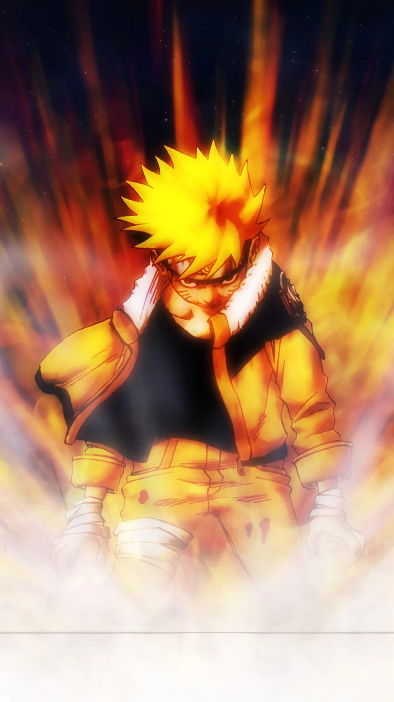

Naruto Shippuden Part 6: Seasons 8-9 (Episodes 152-196) - Every Episode Explained

Last updated: 20 October 2026
This is Part 6 of the complete Naruto Shippuden episode-by-episode guide, covering Seasons 8 and 9 - Episodes 152 to 196. Season 8 is Pain's Assault, the arc most people name as their favourite in the series. Season 9 is 21 episodes of filler.
At a glance
- Episodes: 152-196 (45 episodes)
- Season 8: Pain's Assault - episodes 152-175 - manga canon
- Season 9: Past Arc: The Locus of Konoha - episodes 176-196 - filler
- Aired: 25 March 2010 - 27 January 2011
- Season 8 score: 10/10 · Season 9 score: 4/10
If you watch one arc of Naruto Shippuden, watch 152 to 175. It is the point where everything the series has been building - Naruto's loneliness, Jiraiya's death, the tailed beasts, the Akatsuki - all arrive at once and pay off together. Then stop at 176 and jump to 197.
Every episode explained
Episode 152: Somber News
News of Jiraiya's death reaches Konoha. Naruto is told, and he does not take it well.
Note: A heavy, quiet opening. The grief is handled properly.
Episode 153: Following the Master's Shadow
Naruto works through his grief by chasing what Jiraiya left behind. Tsunade and the village begin decrypting Jiraiya's final message.
Note: Turns mourning into a plot thread.
Episode 154: Decryption
The coded message on Fukasaku's back is cracked, pointing to Pain's true identity.
Note: A rare mystery episode that actually pays off.
Episode 155: The First Challenge
Naruto trains on Mount Myoboku to learn Sage Mode, the technique Jiraiya could never fully master.
Note: The start of the best training arc in the series.
Episode 156: Surpassing the Master
Naruto's sage training pushes past what Jiraiya achieved, thanks to a trick with shadow clones.
Note: Naruto finally overtaking Jiraiya is a real moment.
Episode 157: Assault On the Leaf Village!
Pain attacks Konoha from the sky. The village is caught completely unprepared.
Note: The scale jumps instantly. This is a war, not a fight.
Episode 158: Power to Believe
Konoha's ninja mobilise to defend the village. Naruto is still on Mount Myoboku.
Note: Gives the side characters their due.
Episode 159: Pain Vs. Kakashi
Kakashi fights the Paths of Pain and is pushed further than we have ever seen him.
Note: One of the best fights in the series, and it costs us.
Episode 160: Mystery of Pain
The mechanics of the Six Paths are explored as the village tries to work out how to beat something that cannot really die.
Note: The most interesting villain design in the series.
Episode 161: Surname Is Sarutobi! Given Name, Konohamaru!
Konohamaru stands up to a Path of Pain on his own.
Note: A small, brilliant moment that people still remember.
Episode 162: Pain to the World
Pain reveals his goal: to use the tailed beasts to force the world into peace through shared pain.
Note: The villain's argument is genuinely unsettling because it makes sense.
Episode 163: Explosion! Sage Mode
Naruto arrives back in the village in Sage Mode and takes on the Paths directly.
Note: The best entrance in the series.
Episode 164: Danger! Sage Mode Limit Reached
Naruto's Sage Mode has a hard time limit, and the fight pushes right up against it.
Note: Tension that is built into the power itself.
Episode 165: Nine Tails, Captured!
Naruto is captured. The Nine-Tails begins to surface as he loses control.
Note: The lowest point of the arc.
Episode 166: Confessions
Hinata steps in to help Naruto and finally says what she has been holding in since Part 1.
Note: One of the most famous scenes in the franchise.
Episode 167: Planetary Devastation
Pain uses a technique that levels the entire village. Konoha is destroyed in seconds.
Note: The single biggest moment of destruction in the series.
Episode 168: Fourth Hokage
Naruto breaks the seal and meets his father, Minato, inside his own mind.
Note: The reveal that reframes Naruto's whole life.
Episode 169: The Two Students
Naruto and Pain - both students of Jiraiya - face each other as the answer to his question.
Note: The thematic heart of the arc.
Episode 170: Big Adventure! The Quest for the Fourth Hokage's Legacy, Part 1
A short filler detour about a treasure hunt tied to the Fourth Hokage.
Note: Out of place, but short.
Episode 171: Big Adventure! The Quest for the Fourth Hokage's Legacy, Part 2
The detour concludes.
Note: Skippable.
Episode 172: Meeting
Naruto confronts Nagato directly and gives his answer to Pain's question.
Note: The payoff the whole arc was built for.
Episode 173: Origin of Pain
Nagato's past is told - how a boy from Amegakure became Pain.
Note: Makes the villain understandable without excusing him.
Episode 174: Tale of Naruto Uzumaki
Nagato chooses to believe in Naruto and gives his life to undo the destruction.
Note: A rare ending where the hero wins by talking, and it works.
Episode 175: Hero of the Hidden Leaf
Konoha is rebuilt, and Naruto returns to a village that finally sees him for what he is.
Note: The most satisfying ending in Shippuden.
Episode 176: Rookie Instructor Iruka
A filler arc begins, revisiting Iruka's early days as Naruto's teacher.
Note: Filler, but warm.
Episode 177: Iruka's Ordeal
Iruka struggles with his own past and his feelings about the Nine-Tails.
Note: Actually does something interesting with Iruka.
Episode 178: Iruka's Decision
Iruka makes the choice that defines his relationship with Naruto.
Note: A nice little character piece.
Episode 179: Kakashi Hatake, the Jonin in Charge
Kakashi takes on a team of genin in a filler episode about what makes a leader.
Note: Light, forgettable.
Episode 180: Inari's Courage Put to the Test
Inari returns from the Land of Waves, now older and braver.
Note: A pleasant callback to Part 1.
Episode 181: Naruto's School of Revenge
Naruto teaches a lesson about revenge to a group of kids.
Note: Pure filler.
Episode 182: Gaara's Bond
Gaara's relationship with Naruto is revisited through a filler story.
Note: Fine, but it adds nothing new.
Episode 183: Naruto: Outbreak
A filler episode about a strange illness spreading.
Note: One of the weaker ones.
Episode 184: Deploy! Team Tenten
Tenten finally gets a spotlight episode.
Note: A rare Tenten focus, which fans appreciated.
Episode 185: Animal District
A light filler episode set in a district full of animals.
Note: Harmless.
Episode 186: Ah, the Medicine of Youth
A Guy and Lee filler episode about training and youth.
Note: Silly in a good way.
Episode 187: Gutsy Master and Student: The Training
A two-part filler about Jiraiya and Naruto's training days.
Note: Nostalgic, and it lands better than the rest of the arc.
Episode 188: Record of the Gutsy Ninja Master and Student
The second half of the training flashback.
Note: A decent farewell to Jiraiya.
Episode 189: Sasuke's Paw Encyclopedia
A comedy filler episode about Sasuke and cats.
Note: Genuinely funny, which is rare for filler.
Episode 190: Naruto and the Old Soldier
Naruto befriends an old man with a war story.
Note: Sentimental but effective.
Episode 191: Kakashi Love Song
A filler episode about Kakashi and a woman from his past.
Note: Odd, but not bad.
Episode 192: Neji Chronicles
Neji gets a filler episode about his clan and his fate.
Note: Neji deserved more than this.
Episode 193: The Man Who Died Twice
A filler story about a ninja who supposedly died and came back.
Note: Standard filler.
Episode 194: The Worst Three-Legged Race
A comedy episode built around a three-legged race.
Note: Pure light relief.
Episode 195: Team 10's Teamwork
Team 10 work together on a filler mission.
Note: Shikamaru and Choji are always watchable.
Episode 196: Drive Towards Darkness
The filler arc closes, and the story turns back toward the war.
Note: Finally back to the plot.

Part 6 verdict
Pain's Assault is the peak of the entire franchise. It has the best villain, the best entrance, the best destruction sequence and the most earned ending. Episode 166, 167 and 168 in particular are three of the most famous episodes in anime, and they are three in a row.
Season 9 is the longest filler block in Shippuden, arriving right after the best arc in the show. That placement makes it feel worse than it is - a few episodes (Iruka's, the Jiraiya training two-parter, Sasuke's paw encyclopedia) are genuinely worth watching. The rest is padding.
Overall: 8.5/10. Watch 152-175 without skipping a single one, then read summaries for the rest.

Next in this series
Continue the episode-by-episode guide with the next part.